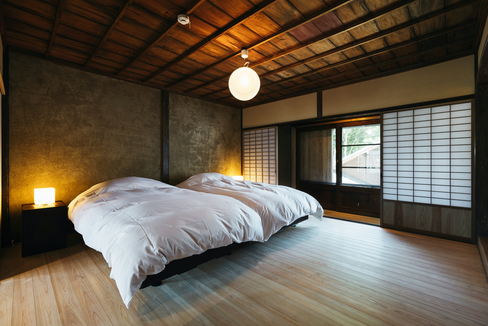
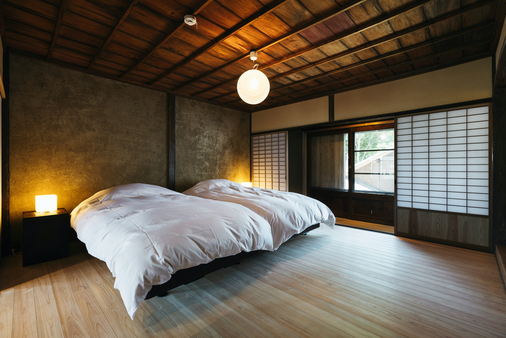

巴 -TOMOE-
坐擁100多年的歷史，一度有倒塌的危險，但在當地企業和保護福島市容的志願者和傳統建築大師的努力下，已經重建了。


它是以田中義政的家徽命名的，田中義政是一位設計家，當時負責築國的發展，對福島的發展做出了很大貢獻。從面向街道的房間裡，你可以看到福島鎮的生活場景在蔓延。
在矢部川流域肥沃的平原、起伏的山丘和有力的防洪支持下，該地區一直擁有豐富的農業產品。從江戶時代後期到明治時代，各種地方特產得到了發展，如手工和紙、石燈籠、佛壇和燈籠，這些東西作為傳統工藝產業至今仍在傳承。 今天留在福島地區的聯排別墅群是工業、生產和建築之間關係的最後見證。
如今在福島地區特色建築是過去工業、生產和建築之間關係的最後見證。
坐擁100多年的歷史，一度有倒塌的危險，但在當地企業和保護福島市容的志願者和傳統建築大師的努力下，已經重建了。
它是以田中義政的家徽命名的，田中義政是一位設計家，當時負責築國的發展，對福島的發展做出了很大貢獻。從面向街道的房間裡，你可以看到福島鎮的生活場景在蔓延。

這個房間是以田中義政使用的一個家族徽章命名的：拔釘子的徽章。 九城（くき）：一個非常吉利的家族徽章，意思是從天掉落九座城堡。
在這個房間裡，你可以看到舊木材和新木材被連接在一起的地方，並深入了解日本傳統建築的接縫方法。讓自己沉浸在泥土和木材的氣味中，體驗身心的平靜。